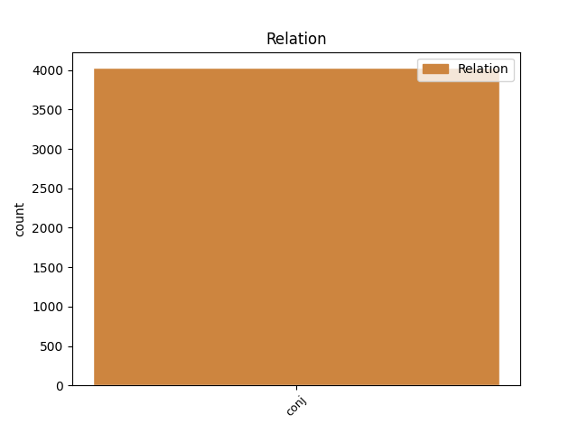
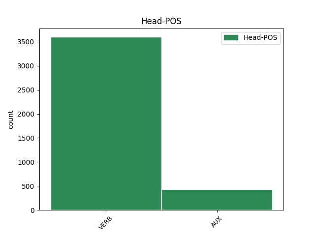
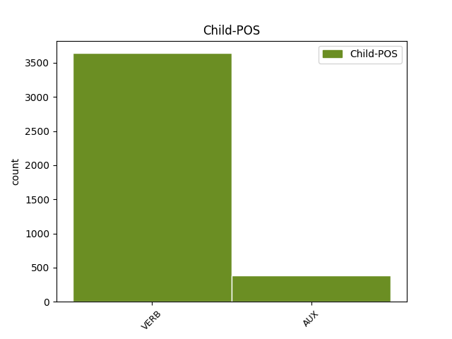

Distribution of features within this leaf



Agreement Rules sorted by frequency.
- When the dependent token is the conjunct(conj) of the head token, and the dependent token is VERB.
1 Wszyscy _ _ _ _ 0 _ _ _
2 podzielamy podzielać VERB fin:pl:pri:imperf Aspect=Imp|Mood=Ind|Number=Plur|Person=1|Tense=Pres|VerbForm=Fin|Voice=Act 0 _ _ _
3 tę _ _ _ _ 0 _ _ _
4 samą _ _ _ _ 0 _ _ _
5 ideę _ _ _ _ 0 _ _ _
6 : _ _ _ _ 0 _ _ _
7 mamy mieć VERB fin:pl:pri:imperf Aspect=Imp|Mood=Ind|Number=Plur|Person=1|Tense=Pres|VerbForm=Fin|Voice=Act 2 conj _ _
8 swobodę _ _ _ _ 0 _ _ _
9 przepływu _ _ _ _ 0 _ _ _
10 orzeczeń _ _ _ _ 0 _ _ _
11 sądowych _ _ _ _ 0 _ _ _
12 . _ _ _ _ 0 _ _ _
1 Obecnie _ _ _ _ 0 _ _ _
2 ponad _ _ _ _ 0 _ _ _
3 50 _ _ _ _ 0 _ _ _
4 % _ _ _ _ 0 _ _ _
5 leków _ _ _ _ 0 _ _ _
6 stosowanych _ _ _ _ 0 _ _ _
7 w _ _ _ _ 0 _ _ _
8 Europie _ _ _ _ 0 _ _ _
9 w _ _ _ _ 0 _ _ _
10 leczeniu _ _ _ _ 0 _ _ _
11 dzieci _ _ _ _ 0 _ _ _
12 nie _ _ _ _ 0 _ _ _
13 przeszło przejść VERB praet:sg:n:perf Aspect=Perf|Gender=Neut|Mood=Ind|Number=Sing|Tense=Past|VerbForm=Fin|Voice=Act 0 _ _ _
14 badań _ _ _ _ 0 _ _ _
15 klinicznych _ _ _ _ 0 _ _ _
16 w _ _ _ _ 0 _ _ _
17 tym _ _ _ _ 0 _ _ _
18 zakresie _ _ _ _ 0 _ _ _
19 ani _ _ _ _ 0 _ _ _
20 nie _ _ _ _ 0 _ _ _
21 zostało zostać AUX praet:sg:n:perf Aspect=Perf|Gender=Neut|Mood=Ind|Number=Sing|Tense=Past|VerbForm=Fin|Voice=Act 13 conj _ _
22 dopuszczonych _ _ _ _ 0 _ _ _
23 do _ _ _ _ 0 _ _ _
24 obrotu _ _ _ _ 0 _ _ _
25 z _ _ _ _ 0 _ _ _
26 takim _ _ _ _ 0 _ _ _
27 przeznaczeniem _ _ _ _ 0 _ _ _
28 . _ _ _ _ 0 _ _ _
Disagree Examples:
1 To _ _ _ _ 0 _ _ _
2 samo _ _ _ _ 0 _ _ _
3 dotyczy dotyczyć VERB fin:sg:ter:imperf Aspect=Imp|Mood=Ind|Number=Sing|Person=3|Tense=Pres|VerbForm=Fin|Voice=Act 0 _ _ _
4 leczenia _ _ _ _ 0 _ _ _
5 , _ _ _ _ 0 _ _ _
6 służba _ _ _ _ 0 _ _ _
7 zdrowia _ _ _ _ 0 _ _ _
8 praktycznie _ _ _ _ 0 _ _ _
9 przestała przestać VERB praet:sg:f:perf Aspect=Perf|Gender=Fem|Mood=Ind|Number=Sing|Tense=Past|VerbForm=Fin|Voice=Act 3 conj _ _
10 istnieć _ _ _ _ 0 _ _ _
11 . _ _ _ _ 0 _ _ _
1 Rozmaite _ _ _ _ 0 _ _ _
2 padliny _ _ _ _ 0 _ _ _
3 wieszano wieszać VERB imps:imperf Aspect=Imp|Mood=Ind|Person=0|Tense=Past|VerbForm=Fin|Voice=Act 0 _ _ _
4 na _ _ _ _ 0 _ _ _
5 Sienkiewiczu _ _ _ _ 0 _ _ _
6 , _ _ _ _ 0 _ _ _
7 ale _ _ _ _ 0 _ _ _
8 ja _ _ _ _ 0 _ _ _
9 w _ _ _ _ 0 _ _ _
10 jego _ _ _ _ 0 _ _ _
11 obronie _ _ _ _ 0 _ _ _
12 zawsze _ _ _ _ 0 _ _ _
13 staję stawać VERB fin:sg:pri:imperf Aspect=Imp|Mood=Ind|Number=Sing|Person=1|Tense=Pres|VerbForm=Fin|Voice=Act 3 conj _ SpaceAfter=No
14 . _ _ _ _ 0 _ _ _
1 Już _ _ _ _ 0 _ _ _
2 wrosł wrosnąć VERB praet:sg:m1:perf:agl Animacy=Hum|Aspect=Perf|Gender=Masc|Mood=Ind|Number=Sing|Tense=Past|VerbForm=Fin|Voice=Act 0 _ _ _
3 em _ _ _ _ 0 _ _ _
4 w _ _ _ _ 0 _ _ _
5 to _ _ _ _ 0 _ _ _
6 środowisko _ _ _ _ 0 _ _ _
7 i _ _ _ _ 0 _ _ _
8 uważam uważać VERB fin:sg:pri:imperf Aspect=Imp|Mood=Ind|Number=Sing|Person=1|Tense=Pres|VerbForm=Fin|Voice=Act 2 conj _ SpaceAfter=No
9 , _ _ _ _ 0 _ _ _
10 że _ _ _ _ 0 _ _ _
11 potrafię _ _ _ _ 0 _ _ _
12 pogodzić _ _ _ _ 0 _ _ _
13 swoje _ _ _ _ 0 _ _ _
14 sprawy _ _ _ _ 0 _ _ _
15 . _ _ _ _ 0 _ _ _
1 Sprawą _ _ _ _ 0 _ _ _
2 zainteresował zainteresować VERB praet:sg:m3:perf Animacy=Inan|Aspect=Perf|Gender=Masc|Mood=Ind|Number=Sing|Tense=Past|VerbForm=Fin|Voice=Act 0 _ _ _
3 się _ _ _ _ 0 _ _ _
4 referat _ _ _ _ 0 _ _ _
5 I-szy _ _ _ _ 0 _ _ _
6 i _ _ _ _ 0 _ _ _
7 przez _ _ _ _ 0 _ _ _
8 kontrolę _ _ _ _ 0 _ _ _
9 korespondencji _ _ _ _ 0 _ _ _
10 może _ _ _ _ 0 _ _ _
11 uzyskamy uzyskać VERB fin:pl:pri:perf Aspect=Perf|Mood=Ind|Number=Plur|Person=1|Tense=Fut|VerbForm=Fin|Voice=Act 2 conj _ _
12 dalsze _ _ _ _ 0 _ _ _
13 miejsca _ _ _ _ 0 _ _ _
14 zachowanych _ _ _ _ 0 _ _ _
15 rzeczy _ _ _ _ 0 _ _ _
16 . _ _ _ _ 0 _ _ _
1 Ledwo _ _ _ _ 0 _ _ _
2 widać widać VERB pred Mood=Ind|Tense=Pres|VerbForm=Fin|VerbType=Quasi 0 _ _ _
3 drogę _ _ _ _ 0 _ _ _
4 , _ _ _ _ 0 _ _ _
5 u _ _ _ _ 0 _ _ _
6 Gontarczyków _ _ _ _ 0 _ _ _
7 całe _ _ _ _ 0 _ _ _
8 okno _ _ _ _ 0 _ _ _
9 zawiało zawiać VERB praet:sg:n:perf Aspect=Perf|Gender=Neut|Mood=Ind|Number=Sing|Tense=Past|VerbForm=Fin|Voice=Act 2 conj _ SpaceAfter=No
10 . _ _ _ _ 0 _ _ _